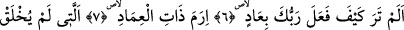
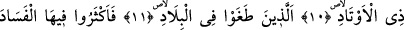
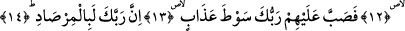
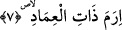

RABBİN HER AN
GÖZETLEMEDEDİR
6. Görmedin mi, Rabbin ne yaptı Âd kavmine?
7. Direkleri (yüksek binaları) olan, İrem şehrine?
8. Ki ülkeler içinde onun benzeri yaratılmamıştı,
9. O vadide kayaları yontan Semûd kavmine,
10. Kazıklar (çadırlar, ordular) sâhibi Firavun’a!
11. Ki onların hepsi ülkelerinde azgınlık ettiler.
12. Oralarda kötülüğü çoğalttılar.
13. Bu yüzden Rabbin onların üstüne azap kamçısı yağdırdı.
14. Çünkü Rabbin (her an) gözetlemededir.
“Görmedin mi Rabbin ne yaptı Âd kavmine?” Bu âyetin başındaki hemze, inkâr ifâde
eden olumsuzluk gücündedir. Olumsuzun olumsuzu ise olumlu olur. Yâni ‘Ey
Muhammed sen âdetâ görme derecesinde olan kesin bir bilgiyle bilmedin mi?’ demektir.
Yani sen Allah Teâlâ’nın bildirmesiyle ve tevatür yoluyla da Rabbinin Ad kavmine ve
benzerlerine nasıl azap ettiğini bilip öğrendin. İşte senin Rabbin senin kavminin
kâfirlerini de -azâbı gerektiren inkâr ve günahlarda onlara ortak oldukları için- aynı
şekilde azaba uğratacaktır.
“Âd” ile Nuh (a.s.) oğlu Sam oğlu İrem oğlu Avs oğlu Âd’ın evlâdı kasdedilmiştir.
Onlar Hûd (a.s.)’ın kavmi idiler. Hâşimoğullarına “Haşim”, Temîm oğullarına “Temîm”
denildiği gibi onlar da babalarının ismiyle adlandırıldılar. Şu halde Âd, Âd’a müntesib
olan kabilenin ismidir. Onların önce gelen nesillerine “Âdü’l-ûlâ” sonradan gelen
nesillerine “Âdü’l-ahîra da denilmiştir. İmâdüddin İbn Kesîr der ki: “Ahkaf sûresinde
geçen Kur’an’da Âd kavmi hakkında geçen bütün haberler Âd kavminin ilk neslinin
haberleridir.”